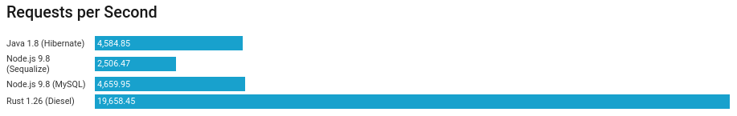

Apresentando Rust, Linguagem de Programação da Mozilla
WEDER MARIANO DE SOUSA
PHILIPE ALEXANDRE COSTA
Foundation
História do Rust
-
 Quem criou?
Quem criou?
-
 Quando criou?
Quando criou?
-
 Como surgiu?
Como surgiu?
Envolvimento da Mozilla
Alguns dados...

Casos de sucesso
Vantagens: Velocidade

Vantagens: Cross-Platform

Syntax
"A segurança do Huskell, a concorrencia do Erlang e a velocidade de C++"
Instalar o Rust
Instalar o Rust
Instalar o Rust
Esse é o gerenciador de versões do Rust
Vai instalar todas as ferramentas
Suporta Linux, Mac e Windows
Ajuda a manter tudo atualizado
Quais Ferramentas do Rust
No final estará disponível:
rustup: o gerenciador de versões
cargo: o gerenciador de projetos e de dependências
rustc: o compilador
rustdoc: o gerador de documentação
rust-gdb e rust-lldb: debuggers
Criando um Projeto
$ cargo new --bin meu-site-em-rust
Hello World
// This is the main function
fn main() {
// Print text to the console
println!("Hello World!");
}
println! is a macro
$ rustc hello.rs
$ ./hello
Hello World!
Enum
#![allow(dead_code)]// An attribute to hide warnings for unused code.
enum Status {Rich, Poor,}
enum Work { Civilian,Soldier,}
fn main() {
use Status::{Poor, Rich};
use Work::*;
let status = Poor;
let work = Civilian;
match status {
Rich => println!("The rich have lots of money!"),
Poor => println!("The poor have no money..."),
}
match work {
Civilian => println!("Civilians work!"),
Soldier => println!("Soldiers fight!"),
}
}
Structs
fn main() {
struct Foo { x: (u32, u32), y: u32 }
// destructure members of the struct
let foo = Foo { x: (1, 2), y: 3 };
let Foo { x: (a, b), y } = foo;
println!("a = {}, b = {}, y = {} ", a, b, y);
// you can destructure structs and rename the variables,
// the order is not important
let Foo { y: i, x: j } = foo;
println!("i = {:?}, j = {:?}", i, j);
// and you can also ignore some variables:
let Foo { y, .. } = foo;
println!("y = {}", y);
// this will give an error: pattern does not mention field `x`
// let Foo { y } = foo;
}
Traits
trait Animal {fn baby_name() -> String;}
struct Dog;
impl Dog {
fn baby_name() -> String {String::from("Spot")}
}
impl Animal for Dog {
fn baby_name() -> String {String::from("puppy")}
}
impl Animal for Cat {
fn baby_name() -> String {String::from("zyon")}
}
fn main() {
println!("A baby dog is called a {}", Dog::baby_name());
println!("A baby dog is called a {}", ::baby_name());
}
Generics
struct Point {
x: T,
y: T,
}
impl Point {
fn x(&self) -> &T {
&self.x
}
fn y(&self) -> &T {
&self.y
}
}
fn main() {
let p = Point { x: 5, y: 10 };
println!("p.x = {}", p.x());
println!("p.y = {}", p.y());
}
Composite Types dependences
#[derive(Debug, Clone, Copy)] // A unit struct without resources
struct Nil;
#[derive(Clone, Debug)]// A tuple struct with resources that implements the `Clone` trait
struct Pair(Box, Box);
fn main() {
let nil = Nil;// Instantiate Nil
let copied_nil = nil;// Copy Nil, there are no resources to move
println!("original: {:?}", nil);// Both `Nil`s can be used independently
println!("copy: {:?}", copied_nil);
let pair = Pair(Box::new(1), Box::new(2));// Instantiate Pair
println!("original: {:?}", pair);
let moved_pair = pair;// Copy pair into moved_pair, moves resources
println!("copy: {:?}", moved_pair);
let cloned_pair = moved_pair.clone(); // Clone moved_pair into cloned_pair (resources are included)
drop(moved_pair);// Drop the original pair using std::mem::drop
println!("clone: {:?}", cloned_pair);// The result from .clone() can still be used!
}
Lazy evaluation(Avaliada Preguiçosamente)
fn main(){
let mut iter = (0..).take(5).filter(|&x| x > 1);
println!("iter {:?}", iter);
println!("iter {:?}", iter.next());
println!("iter {:?}", iter.next());
}
//result
iter Filter { iter: Take { iter: 0.., n: 5 } }
iter Some(2)
iter Some(3)
Imperativo Vs Funcional
use std::error::Error;
use std::fs::File;
use std::io::prelude::*;
use std::path::Path;
fn main() {
// Create a path to the desired file
let path = Path::new("hello.txt");
let display = path.display();
// Open the path in read-only mode, returns `io::Result`
let mut file = match File::open(&path) {
// The `description` method of `io::Error` returns a string that describes the error
Err(why) => panic!("couldn't open {}: {}", display,why.description()),
Ok(file) => file,
};
// Read the file contents into a string, returns `io::Result`
let mut s = String::new();
match file.read_to_string(&mut s) {
Err(why) => panic!("couldn't read {}: {}", display,why.description()),
Ok(_) => print!("{} contains:\n{}", display, s),
}
}
Ownership
fn main() {
let v = vec![1,2,3];
//let v2 = v;
let _v2 = &v;
println!("v[0] is: {}",v[0]);
}
Default Thread
use std::thread;
use std::time::Duration;
fn main() {
thread::spawn(|| {
for i in 1..10 {
println!("hi number {} from the spawned thread!", i);
thread::sleep(Duration::from_millis(1));
}
});
for i in 1..5 {
println!("hi number {} from the main thread!", i);
thread::sleep(Duration::from_millis(1));
}
}
Shared Thread
use std::thread;
fn main() {
let x =1;
let thread1 = std::thread::spawn(move || {x + 8});
let thread2 = std::thread::spawn(move || {x + 27});
println!("{:?}", thread1.join());
println!("{:?}", thread2.join());
}
Shared mutable Thread
use std::sync::{Arc, Mutex};//including Atomic Reference Counted Pointer and Mutex
use std::thread;// Import Threads from Rust Standard Library
use std::time::Duration;// Import Sleep methods
fn main() {
let data = Arc::new(Mutex::new(vec![1u32, 2, 3]));
println!("Data before thread mutation: {:?}", data);
for i in 0..2 {
let data = data.clone();
thread::spawn(move || {
let mut data = data.lock().unwrap();
data[i] += 2;
});
}
println!("Data immediately after thread mutation: {:?}", data);
thread::sleep(Duration::from_millis(10));
println!("Data 10ms after thread mutation: {:?}", data);
thread::sleep(Duration::from_millis(50));
println!("Data 50ms after thread mutation: {:?}", data);
}
Tests
#[test]
#[should_panic(expected="assertion failed")] assert_eq!
pub fn add_two(a: i32) -> i32 {
internal_adder(a, 2)
}
pub fn internal_adder(a: i32, b: i32) -> i32 {
a + b
}
#[cfg(test)]
mod tests {
use super::*;
#[test]
fn internal() {
assert_eq!(4, internal_adder(2, 2));
}
#[test]
fn add() {
assert_eq!(4, add_two(2));
}
}
Tests
cargo test
running 2 tests
test tests::add ... ok
test tests::internal ... ok
test result: ok. 2 passed; 0 failed; 0 ignored; 0 measured; 0 filtered out
Tests as Documentation
//!....
//! assert_eq!(4, adder::add_two(2))
//!...
Cargo doc
/// A função `add_two` deve receber um valor inteiro
/// # Examples
/// extern crate rust;
/// assert_eq!(4, internal_adder(2, 2));
/// assert_eq!(4, add_two(2));
/// ```
pub fn add_two(a: i32) -> i32 {
internal_adder(a, 2)
}
/// A função `internal_adder` deve receber dois valor inteiro
pub fn internal_adder(a: i32, b: i32) -> i32 { a + b }
Tests as Documentation
Macros
let x: Vec = vec![1,2,3];
let x: Vect={
let mut temp_vec = Vec::new();
temp_vec.push(1);
temp_vec.push(2);
temp_vec.push(3);
temp_vec
};
Cargo - Package Manager
Cargo.toml
[package]
name = "crud-api"
version = "0.1.0"
authors = [""]
[dependencies]
rocket = "0.3.6"
rocket_codegen = "0.3.6"
serde = "1.0"
serde_json = "1.0"
serde_derive = "1.0"
[dependencies.rocket_contrib]
version = "*"
default-features = false
features = ["json"]
Libs For Outer Languages
Helix - Ruby
Neon - NodeJs
RustCPython - Python
Criando uma API
$ rustup default nightly
$ cargo new my-api --bin
Cargo.toml
[dependencies]
rocket = "0.3.6"
rocket_codegen = "0.3.6"
Criando uma API
src/main.rs
#![feature(plugin)]
#![plugin(rocket_codegen)]
extern crate rocket;
#[get("/<name>/<age>")]
fn hello(name: String, age: u8) -> String {
format!("Hello, {} year old named {}!", age, name)
}
fn main() {
rocket::ignite()
.mount("/hello", routes![hello])
.launch();
}
Criando uma API
$ cargo run
http://localhost:8000/hello/{name}/{age}
Criando um Executável
Agora podemos criar o nosso executável
$ cargo build --release
Obrigado!!!
fn main() {
println!("The End");
println!("weder96@gmail.com");
println!("philipe40@hotmail.com");
}